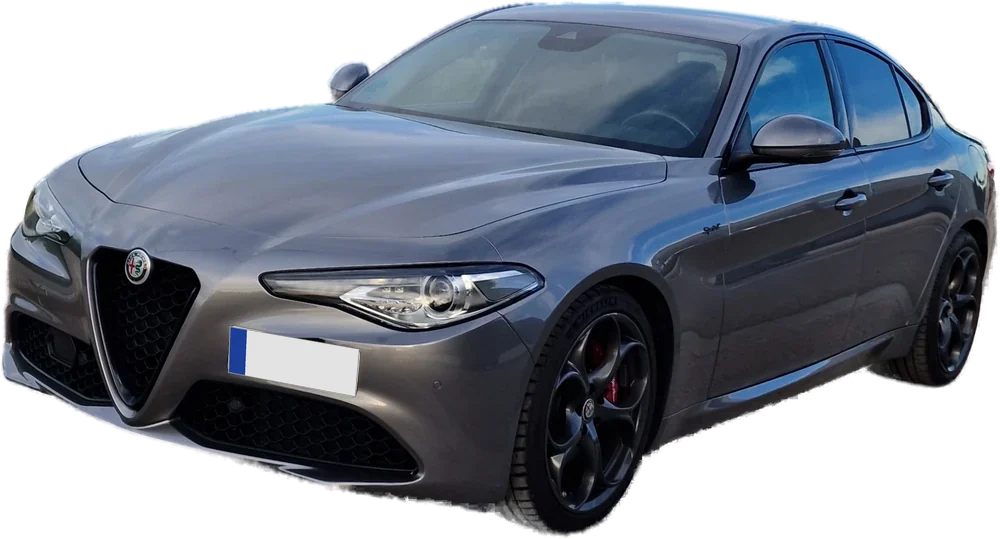

Introduce el precio y el importe
Pulsa "Buscar cerca de mí" en Gasolineras cercanas para comparar diésel y diésel+ por marca en tu zona.
Sin configurar. Tus repostajes solo están en este móvil.

Pregunta con tus palabras: busca en el manual del Giulia y en el del sistema multimedia y te enseña las páginas.
La capacidad del depósito (52 L) se cambia tocando el botón «Depósito» de arriba.
Dile a la app cuánto combustible tienes antes de echar. Puedes hacerlo de dos formas con el selector:
Con eso la barra muestra en gris lo que tenías y en rojo lo que echas, y te dice cuánto cabe todavía y cuánto cuesta llenar. Si el importe no cabe entero, te avisa.
Al guardar un repostaje, el nivel se queda en lo que has llenado, para que la barra refleje cómo está el depósito ahora.
Los precios son los oficiales del Ministerio. Al buscar, la app pide al momento los de tu zona; si no puede, usa la copia que se descarga cuatro veces al día. La fecha y hora de los precios aparece bajo el botón. Si una gasolinera tarda en comunicar un cambio al Ministerio, puede haber un céntimo de diferencia.
Para que el consumo sea fiable, apunta siempre los kilómetros y prueba cada combustible varios depósitos seguidos.
Tus repostajes se guardan en el móvil. Con esto, además, se copian solos a un repositorio privado tuyo, y si borras el navegador o cambias de móvil se recuperan.
1. Crea el repositorio privado (solo la primera vez)
repostaje-datos
2. Crea la clave
Repostaje móvil
github_pat_
3. Conéctala en la app
tuusuario/repostaje-datos
repostajes.json
Si la clave caduca, la app lo avisa en rojo: genera otra y vuelve al paso 3. Si pierdes el móvil, bórrala en la misma pantalla de GitHub donde la creaste.
En la pantalla del coche, Mi Giulia tiene: gasolineras más baratas cerca (al tocar una te lleva con tu navegador), radares cerca, estado del Giulia (combustible, km, aceite y neumáticos) y botones para el avisador de radares y para empezar o terminar un viaje.
Para que aparezca (solo una vez; es necesario porque la app no viene de Google Play):
En el coche solo se ve una app a la vez: con Google Maps en pantalla, los avisos de radares siguen sonando aunque Mi Giulia no se vea.
En Repostaje → Radares. Funciona con la app Android, en segundo plano, también con Google Maps o Waze abiertos en Android Auto: la voz y los pitidos salen por los altavoces del coche como las indicaciones del navegador.
En Repostaje → Mis viajes aparecen tus trayectos con la hora de salida y de llegada, los km, lo que te ha costado el gasóleo y la ruta en el mapa (toca un viaje para verla).
viajes.json
viajes/rutas
Está en la pestaña Mi Giulia, abajo. Los datos salen de los servicios conectados de Alfa (los mismos que ves en My Remote). Un proceso en tu repositorio privado los lee cada 3 horas y los deja en coche.json; la app los muestra aquí.
coche.json
Puesta en marcha (solo una vez)
UCONNECT_EMAIL
UCONNECT_PASSWORD
Si varias veces seguidas pones mal el PIN, Alfa puede bloquearlo en su app. Si una orden «no se confirma a tiempo», puede que se haya hecho igualmente.
Pulsa la rueda dentada de arriba. Ahí fijas el próximo cambio de aceite, los avisos que quieres recibir y otros detalles de la app.
Las notificaciones las manda el proceso de GitHub cada vez que lee el coche (cada 3 horas), así que llegan aunque tengas la app cerrada. Cada aviso llega una vez; si se arregla y vuelve a pasar, avisa de nuevo. El del aceite te recuerda cada 1.000 km hasta que pulses «He cambiado el aceite».
VAPID_PUBLICA
VAPID_PRIVADA
Funciona con la app instalada desde Chrome. Si el móvil tiene ahorro de batería agresivo para Chrome, las notificaciones pueden llegar con retraso.
Con la vigilancia activada, el proceso de GitHub lee el coche cada hora y te manda una notificación si aparece aparcado fuera del radio (300 m por defecto, se cambia en Ajustes). El coche manda su posición al apagarlo, así que el aviso llega cuando lo dejan parado en otro sitio, no mientras se mueve.
Acceso rápido sin widget: mantén pulsado el icono de Mi Giulia → verás «Vigilar» y «No vigilar». Puedes arrastrarlos a la pantalla de inicio como iconos sueltos.
Widget de un toque (no abre la app), con la app gratuita HTTP Shortcuts de Google Play:
https://api.github.com/repos/Bhelma/repostaje-datos/actions/workflows/coche.yml/dispatches
Authorization
Bearer
Accept
application/vnd.github+json
{"ref":"main","inputs":{"accion":"vigilar_on"}}
vigilar_on
vigilar_off
Al pulsarlo, en un minuto o dos te llega una notificación confirmando que se ha activado o desactivado.
Abre la web en Chrome → menú ⋮ → Instalar aplicación (o «Añadir a pantalla de inicio»). Tendrá su icono, se abrirá a pantalla completa y funcionará sin cobertura con los últimos datos.
El mismo PIN de 4 cifras que usas en la app de Alfa. No se guarda en ningún sitio.
El Giulia 2.2 diésel lleva 52 litros de serie.